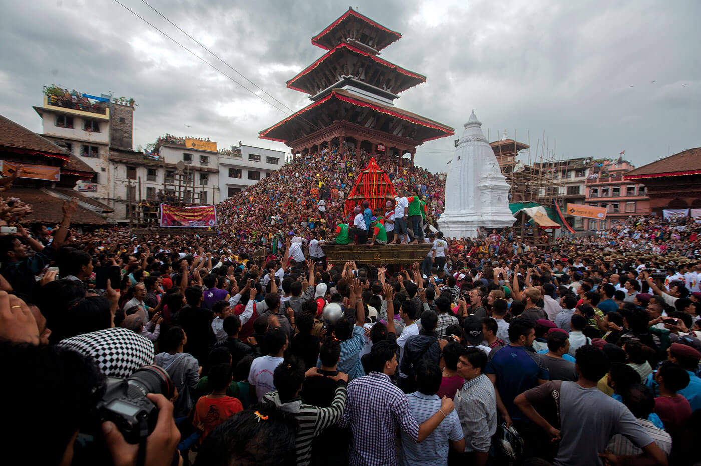
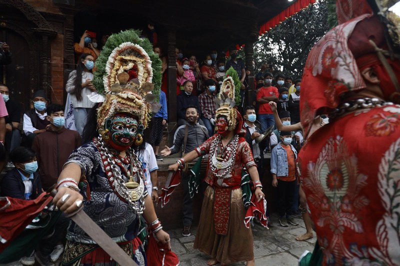
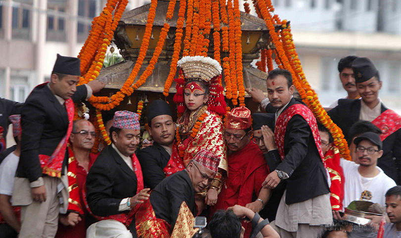

Indra Jātrā, also known as Yenyā (Nepal Bhasa: येँयाः), is the biggest religious street festival in Kathmandu, Nepal. The celebrations consist of two events, Indra Jātrā and Kumāri Jātrā. Indra Jātrā is marked by masked dances of deities and demons, displays of sacred images and tableaus in honor of the deity Indra, the king of heaven. Kumāri Jātrā is the chariot procession of the living goddess Kumari.
Family members deceased in the past year are also remembered during the festival. The main venue of the festivities is Kathmandu Durbar Square. The celebrations last for eight days from the 12th day of the bright fortnight to the 4th day of the dark fortnight of Yanlā (ञला), the eleventh month in the lunar Nepal Era calendar.

Indra Jatra was started by King Gunakamadeva- (गुणकामदेव) to commemorate the founding of the Kathmandu city in the 10th century. Kumari Jatra began in the mid-18th century. The celebrations are held according to the lunar calendar, so the dates are changeable. This year (2020), the festival takes place from 30th August to 6th September, and the main day of attraction falling on 1st Sep.Indra Jatra, one of the biggest festivals celebrated in Kathmandu valley, has begun with the erection of a lingo (sacred wooden pole) at Hanumandhoka premises in Basantapur Darbar Square on Saturday morning.
The eight-day long Indra Jatra festival falls in September and is one of the most exciting and revered festivals of the Newar community of the Kathmandu Valley. This also marks the beginning of a month-long festival season of autumn. It begins with the erection of a wooden pole made of pine at Basantapur Sqaure in front of the old Hanuman Dhoka Palace.
For the pole-raising ceremony, hundreds of spectators gather at the Palace Square and on the surrounding temples. The chariot of Kumari, the Living Goddess, is taken out in a procession through the main streets of Kathmandu.
Masked dancers known as Lakhay take to the streets almost every evening accompanied by loud drums. The festival commemorates the time when Indra came down from heaven in human form to look for an herb. 
Each night of Indra Jatra the shrines and ancient palace buildings around Kathmandu Durbar Square are aglow with oil wicks. Each night on the platform in front of the temple of the Living Goddess, there is an enactment depicting the ten earthly incarnations of Lord Vishnu. The large image of Akash Bhairab's head is put on display out in the open directly facing his temple at Indra Chowk. In the afternoon of the day before full moon, ecstatic mobs gather near Hanuman Dhoka Palace for the long-awaited Living Goddess’ chariot procession to catch a glimpse of the revered little Newar girl who has been deified as Kumari representing Goddess Taleju. The chariot of the Kumari followed by two other smaller chariots carrying a representative of Ganesh and Bhairav is taken to different parts of the old Kathmandu through the narrow alleys where people gather to watch and py homage. The festival of Indra Jatra ends with the lowering of the (lingam) pole bearing Indra's flag amidst religious ceremonies.
